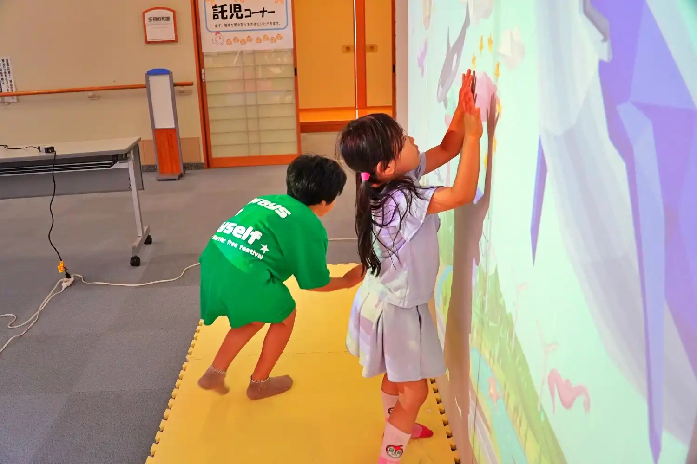
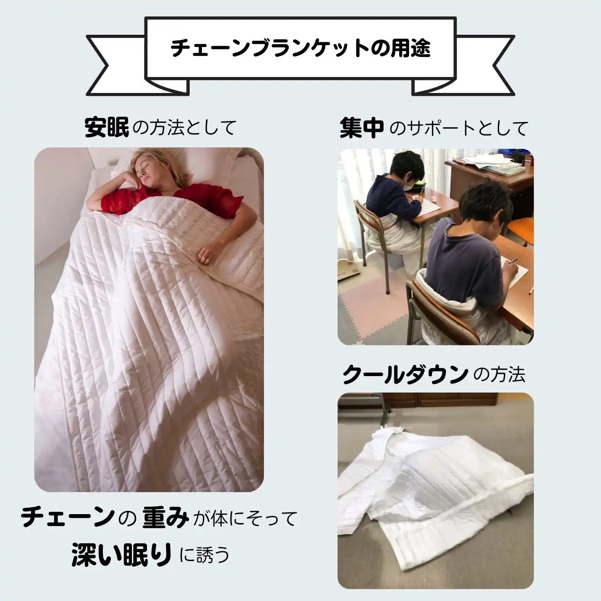
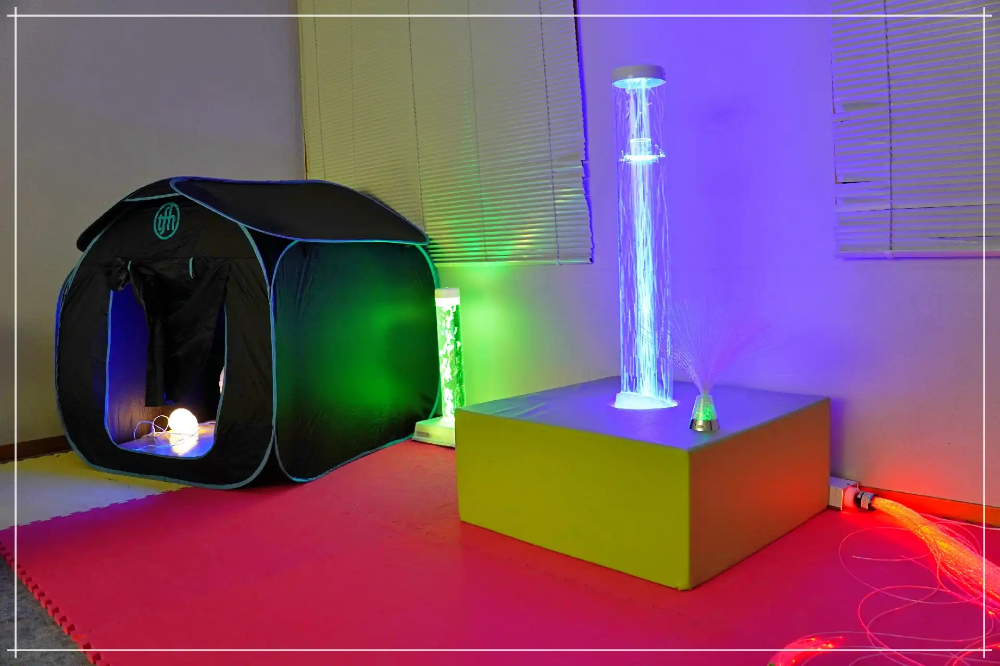
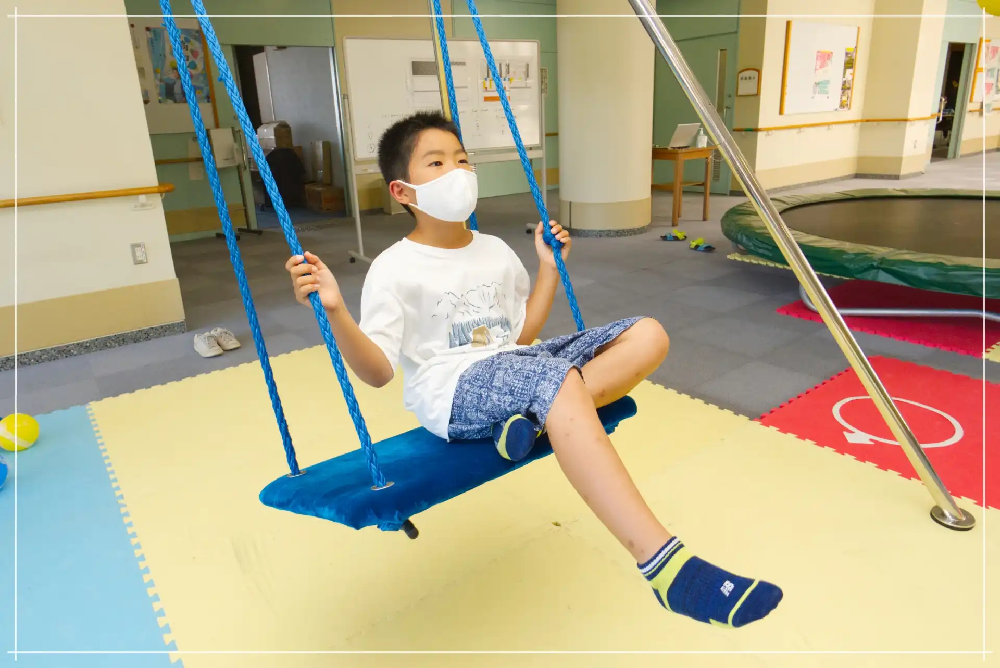

株式会社デジリハ 様

プロジェクターで映した映像を、タッチして遊べます。
アプリがいくつもあって、カスタマイズもできるので、むずかしさはもちろん、手と目のチームワーク、体幹のバランス、まわりの人とのコミュニケーションなど、その子に合わせて訓練に使えます。
機器展でも、たくさんの子どもたちが笑顔で楽しんでいます٩( ᐛ )و
ほかにも、こんなセンサーがありますよ!(下のリンクからどうぞ)
いつもお世話になっているメーカーさんです(順不同)。
外部のサイトが新しいタブで開きます。

プロジェクターで映した映像を、タッチして遊べます。
アプリがいくつもあって、カスタマイズもできるので、むずかしさはもちろん、手と目のチームワーク、体幹のバランス、まわりの人とのコミュニケーションなど、その子に合わせて訓練に使えます。
機器展でも、たくさんの子どもたちが笑顔で楽しんでいます٩( ᐛ )و
ほかにも、こんなセンサーがありますよ!(下のリンクからどうぞ)

チェーンブランケットなど、感覚支援の商品を扱っている会社さんです。
チェーンブランケットは、北欧スウェーデン生まれの「眠れない」「そわそわ落ち着かない」人のための特別な掛け布団。体にそってチェーンがぎゅっと抱きしめるように触れるので、「ホッ」として「ふにゃー」で「ふぅ……」となります。
……何を言っているか、分かりませんよね。
「感覚」は目に見えないし、自分だけが感じるものなので、なかなか分かってもらえないんです。大人でもそうなのだから、子どもさんはもっとだと思います。(決して私の語彙力の問題ではないはず……)
だからこそ「感覚」は大切で、伝わりにくいもの。ぜひ、体験してみてください。
キッズバリアフリーフェスティバルなどにも展示してくださっていて、ホームページからレンタルもできるそうです٩( ᐛ )و

スヌーズレン用品を扱っている会社さんです。1994年に、日本で初めてスヌーズレンの機器を本格的に輸入した会社さんなんですよ。
スヌーズレンは、光・音・さわり心地・香りで、五感にやさしく働きかける、くつろぎの空間づくりの考え方です。泡がのぼりながら色が変わる光の筒や、さわっても熱くない光るファイバーなど、見ているだけで、ふっと肩の力がぬけます。
「何かを練習する」場所ではなく、安心して、心地よく過ごせることを大切にしています。特別支援学校や療育施設など、たくさんの場所で使われているそうです。
写真は、発達ブースのスヌーズレンコーナーの様子です。機器展では、このコーナーでご協力いただいています。ぜひ、ゆったり体験してみてください٩( ᐛ )و
北欧の福祉用具を輸入して紹介している会社さんです。
デンマーク生まれのPROTAC(プロタック)は、中に小さなボールが入ったクッションやブランケット、ベストのシリーズ。体を動かすとボールも動いて、体に心地よい刺激が伝わるので、「ここに体がある」感じがつかみやすくなり、落ち着いて座ったり、眠ったりするのを助けてくれます。(感じ方は人それぞれなので、ぜひ実際にさわってみてください)
inmu(インミュ)は、さわる・なでる・抱っこするのに合わせて、音楽や振動が変わるクッションです。ボタンがなく、さわるだけで楽しめます。
機器展では、毎年いろいろな用品を持ってきてくださっています٩( ᐛ )و
動画は、作っている海外のメーカーのものです(日本語ではありません)。

車いすや装具から、療育で使う感覚統合の遊具(体を動かしながら、ゆれやバランスなどの感覚を育てる遊具。ブランコ・スクーターボードなど)、気持ちを伝えるためのコミュニケーション機器まで、幅広く扱っている会社さんです。
分厚い総合カタログは、見ているだけで「こんな道具もあるんだ!」と発見がいっぱい。専門職向けのセミナーもされていて、私たちもいつも勉強させてもらっています。
写真のブランコも、パシフィックサプライさんの遊具です。機器展では、カタログでのご紹介にもご協力いただいています。気になる道具があれば、ブースで声をかけてくださいね٩( ᐛ )و